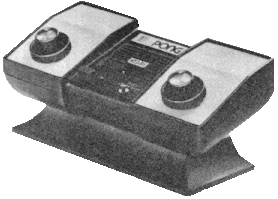
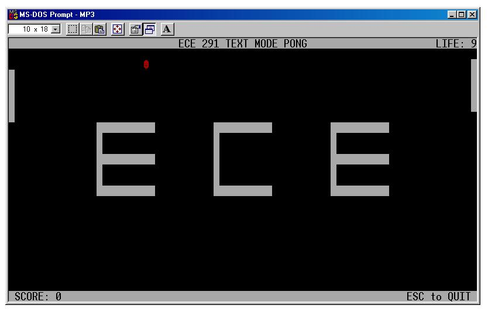

| ECE291 |
Computer Engineering II |
Kalbarczyk, Fall 1999 |
Machine Problem 3: Text-Mode Pong
| Assigned |
Tuesday, October 12, 1999 |
| Purpose |
Text-Mode Graphics, Keyboard and Timer Interrupts |
| Points |
50 |
| Due Date |
Tuesday October 26, 1999 - 5:00pm |
Introduction
|
Pong, while not the first videogame, was the first
coin-op arcade game and the first mainstream videogame that was
available to almost everyone. Pong was the impetus for the development
of the video gaming industry, almost single-handedly creating both the
home and the arcade videogame markets. |
|
 |
|
For your next MP, you will design a different kind of
Pong. In addition to the paddles and the ball moving back and forth, you
will have blocks placed in between, that fall off as the ball bounces
off them giving the ball a more random behavior. |
Problem Description

As
we are working in text-mode, a few rules need to be set ( just to make our lives
easier).
- First of all, our object positions shall be calculated as ( 160 * row +
column ). Thus, the position of an object is nothing but its offset in the
video buffer.
- Next, we shall assume that the ball moves only at a 45 degree angle. In
order to achieve this, we shall increment/decrement by 6 units in the
X-direction for every increment/decrement of 1 unit in the Y-direction. So,
the x-coordinate of the ball, takes values from 4 to 154, in increments of
6, whereas the y-coordinate of the ball, can range from 1 to 23 ( due to
the presence of the two bars ).
- The paddles are located at the ends and have freedom of motion only in the
Y-direction. The computer's paddle position can take any value from 160 to
160*19 and the player's paddle takes values from 160*2-2 to 160*20-2 ( as
the paddles are each 5 units long ). For your convenience, this number may
be hard-coded.
- The ball shall always start from any row in the center column. This is so
as to give equal advantage to both players. This center column is 76.
- The player has 10 lives, with the top right corner showing the number of
lives remaining. The player loses a life every time he/she misses the ball.
- The score at the bottom indicates the number of times the player has
returned the ball. It is accumulative over the 10 lives.
- The game should quit if the Esc key is pressed at any time during the game
or if all 10 lives have been used up.
Gold Star for implementation of different angles and velocities...
Implementation
A word about Double Buffering:
- In order for the display to be smooth, we need to perform double
buffering. To achieve this we shall use pages 0 and 1 of the video buffer.
In our function call that draws to the screen, we shall dump each object
onto page 1 of the buffer and then perform a quick dump from page 1 to page
0. This way, we update the whole screen at a time, rather than just a part
of it.
A word about the Random Generator Algorithm:
- To bring about an element of randomness into the game, as far as the initial
co-ordinates of the ball and the behavior of the ball are concerned, we
shall use the following algorithm to generate random numbers
- R1 = Randval
- Ri+1 = Randval = ( K1 * Ri + K2 ) % MaxValue
Where
- Ri is the random value generated in the i-th call
to the subroutine.
- Randval is a variable that holds the initial random value and
is updated with the result after each call to the random function.
- K1 and K2 are two large, prime-valued constants.
- MaxValue is the largest random value desired.
- For a list of large prime numbers, refer http://www.ece.uiuc.edu/ece291/class-resources/primes.html
A word about Interrupt Service Routines:
- In MP2, we used LIB291's kbdine to read data from the keyboard.
Calling this function causes your computer to poll the default keyboard
handler until a key is read into the DOS keyboard buffer.
- But what if you wanted to do something else while waiting for a keyboard
input. Suppose, for example, you also wanted to read from a mouse at the
same time you were waiting for input from the keyboard. You could not do
this with blocking I/O.
- The use of customized interrupt service routines (interrupt handlers)
allows the program to handle asynchronous I/O. With asynchronous I/O,
the program is able to do other things while waiting for data from one
particular input. In this MP you are required to watch for inputs
from the keyboard.
- The subject of ISRs is discussed in lectures 13 through 16. Read the
lecture notes and Chapter 9 in the lab manual for more information.
A word about the AI:
- One way to implement the AI is to use a variable, AIstatus. Each time a
paddle hits the ball, this variable is randomly generated. If the value is
satisfies a certain condition ( for example, if the 3rd and 4th bits are SET
), the AI can be designed to move away from the ball, and towards the ball
in all other cases.
A word about Bouncing off Edges:
- As far as the paddles go, it is sufficient to bounce off the paddle only
if the paddle is in front of it, but with the blocks in the center, make
sure that the ball does NOT go over it, but rather bounce off ( take care of
diagonals ), keeping in mind that incrementX is +/-6 and incrementY is +/-1
A word about handling the Timer:
- The first step is to (in your TimerInstall function) set the timer chip to
interrupt 36 times in a second. (The default is 18 times). (refer the lab
manual on how to set this up).
- Now that the timer fires once every 1/36th of a second... we have to
remember that other programs are running simultaneously in memory, who also
make use of the clock, which uses this timer chip. This is where timerTick
comes in handy. In your TimerHandler, increment timerTick every time... once
it equals 2, call the ORIGINAL timer handler ( so you don't have to reset
the PIC in this case ) and set timerTick back to ZERO. This way, of the 36
times that the TimerHandler is called, in one second... 18 times you reset
the PIC, and the other 18 times is done by the default handler ( be wary
when calling the ORIGINAL handler ).
- This protects other applications that are running simultanously in memory.
Now to use the timer, we use timerFlag. In the handler we set it to 1, and
in our MP3Main, every time it sets to 1, ( which is 36 times a sec ), we
call the appropriate functions ( refer handout ) and set it back to 0.
- So the Handler sets timerFlag to 1 and we set it back to 0 in our main
loop, so that our functions are called once every 1/36th of a second. Now
for updateFlag. We have to update the ball only 9 times a second. So, in our
TimerHandler, we increment updateFlag. and in our MP3Main loop, we check if
it equals 4 ( since 4 * 1/36 = 1/9 ) and if so, we call the appropriate
functions and set this flag back to 0.
A word about the Timer Chip:
The computer has a number of timer chips ( for a variety of purposes ). One
such timer chip is used by the system to update your clock. This chip fires an
interrupt 18 times a second.
We can change this frequency to any multiple of 18 as follows:
Case 1:
MOV AX, 0000h
OUT 40h, AL
MOV AL, AH
OUT 40h, AL
This will set the timer to fire 18 * 1 times a second. |
Case 2:
MOV AX, 4000h
OUT 40h, AL
MOV AL, AH
OUT 40h, AL
This will set the timer to fire 18 * 4 times a second. |
Case 3:
MOV AX, 2000h
OUT 40h, AL
MOV AL, AH
OUT 40h, AL
This will set the timer to fire 18 * 8 times a second. |
Case 4:
MOV AX, 1000h
OUT 40h, AL
MOV AL, AH
OUT 40h, AL
This will set the timer to fire 18 * 16 times a second. |
Remember our I/O bus is only 8-bit, hence we have to send them in two parts.
The pattern should be evident. We send via AX the bit mask for the appropriate
speed. Don't forget to reset it in your TimerUninstall function !!
Procedures
- This assignment has twelve procedures. You will receive credit for this
assignment by replacing each of the twelve procedures listed below with your
own code.
- Experiment with the working code to gain a full understanding of how the
program works.
- Use defined constants where appropriate.
- Comment ALL the functions and make sure that they preserve all register
values.
- MP3Main
This is the main routine for this program and you should
implement it first.
Before you start, read through the entire write-up and
make sure you understand the other functions that you will need to
call.
The program body is as follows:
Your main program must
initially
- Install the keyboard interrupt handler.
- Install the timer interrupt handler.
Main Loop
- ( for every clock tick - 1/36th of a second ) - [ Wait for timerFlag
to turn 1 and then set it to 0 ]
- Draw to the screen.
- Update the players' positions.
- ( for every 4 clock ticks ) - [ Wait for updateFlag to turn to 4 (
or greater ) and then subtract 4 ]
- Update the wallpaper ( map )
- Update the ball's position.
- ( if someone missed ) - [ Check the Carry Flag ]
- Generate a new game
- ( if we have exhausted all our lives ) - [ Check the Carry Flag
]
- Check if the Esc key was pressed.
- Loop back.
Finally, when your main program is ready to exit, it should
- Return the keyboard and timer handlers to their original values.
- Reset the timer chip to tick once every 1/18th of a second.
A sample skeleton for the main loop is:
Label1:
Check if timerFlag is 1
If NOT, jump to Label2
-- inside main loop --
Label2:
Check if Esc Key was
pressed
If NOT, jump to Label1
-- outside the loop --
|
Label1:
Check if Esc Key was
pressed
If SO, jump to Label2
Check if timerFlag is 1
If NOT, jump to Label1
-- inside main loop --
Jump to Label1
Label2:
-- outside the loop -- |
Points: 5
-
GenerateGame
- Purpose: Refresh variables for a new game. Also, decide whether the game
has come to an end or not.
- Input: livesRemaining
- Output:
- ballPosX
- ballPosY
- incrementX
- incrementY
- AIstatus
- CF - This is SET if the player's lives are over, CLEAR otherwise.
- Notes:
- Use the random number generator algorithm to obtain the variables
ballPosY and AIstatus.
- The variable ballPosX is always assigned 76 (for our convenience).
- As incrementX and incrementY take only definite values ( +/- 6 and +/-
1 respectively ), we can use the above two random numbers to help assign
values for them. For example, if bit 0 of ballPosY is 1, then set
incrementX may be set to +6 and -6 otherwise. Similarly, incrementY may
be set based on bit 1 of ballPosY.
- Points: 5
- DrawScreen
- Purpose: To display the game on the screen.
- Input:
- ballPosX
- ballPosY
- playerPos
- compPos
- livesRemaining
- lifePos
- score
- scoreBuf
- scorePos
- paddleLength
- wallpaper
- Output:
- Write directly to video memory (B800:0000)
- Notes:
- Draw the objects on to page 1 of the video memory one by one ( the
wallpaper, the ball, the paddles, the score and the lives remaining ) at
their respective locations.
- Transfer the entire block of memory from page 1 to page 0 using string
commands.
- Points: 5
- UpdatePlayers
- Purpose: To perform AI and parse the keyboard inputs.
- Input:
- keyCode
- keyStatus
- ballPosX
- ballPosY
- incrementX
- incrementY
- AIstatus
- Output:
- playerPos (updated)
- compPos (updated)
- Notes:
- First of all, if keyStatus is 1 update the player's paddle. Based on
the UPKEY or DNKEY, add +/- 160 to the playerPos.
- AI is updated ONLY when the ball is moving towards it ( that is, when
incrementX is -6 ).
- The AI should track the ball, when the ball is outside it's length (
above its top edge or below its bottom edge ).
- Choose a number, say 20h. Based on whether AIstatus is above or below
it, guide the paddle away from or towards the ball also in increments of
+/- 160.
- Points: 5
- UpdateBall
- Purpose: To animate the ball on the screen and update the score.
- Input:
- playerPos
- compPos
- incrementX ( to look ahead )
- incrementY ( to look ahead )
- Output:
- incrementX (updated)
- incrementY (updated)
- ballPosX (updated)
- ballPosY (updated)
- AIstatus (updated)
- score (updated)
- livesRemaining (updated)
- CF - This is SET if the somebody missed, CLEAR otherwise.
- Notes:
- Check if the ball is moving towards the player. If so, is it at the
last column ( 154 )? If so, check if the ball is along the length of the
paddle. If so, bounce it back ( modify incrementX ) and update score. If
not, update livesRemaining and SET the CF.
- Check if the ball is moving towards the AI. If so, is it on the first
column ( 4 )? Follow the same routine as above.
- Check if the ball is at row 1 or row 23. If so, check the direction (
incrementY ) and bounce it off ( modify incrementY ) accordingly.
- A good idea would be to generate AIstatus every time the ball touches
a paddle ( for more random Ai behavior ). HINT: Using a macro would help
a lot.
- Finally, update the variables ballPosX and ballPosY based on the new
values of incrementX and incrementY.
- Points: 5
- UpdateMap
- Purpose: Destroy the blocks on the screen as the ball bounces off
it.
- Input:
- ballPosX
- ballPosY
- incrementX ( to look ahead )
- incrementY ( to look ahead )
- Output:
- incrementX (updated)
- incrementY (updated)
- wallpaper (modified)
- Notes:
- Based on incrementX, look for blocks 6 spaces ahead/behind. If there
is one, bounce off ( modify incrementX ) and update the map ( erase the
block from the wallpaper ).
- Based on incrementY, look for blocks above/below. If there is one,
bounce off ( modify incrementY ) and update the map.
- Do not process if we are at extreme locations ( that is, row is 1 or
23 and column is 4 or 154 ) as these will be taken care off by the
UpdateBall function.
- Next, based on the direction, check for a block along the path of
motion. For this, extrapolate to the ball's next position and check if
there is a block there. If so, the ball should go back in the direction
it was coming ( that is, negate both incrementX and incrementY ).
- Once again, take care at extreme locations.
- Points: 5
- KbdInstall
- Purpose:
- Installs Interrupt 9's (IRQ1's) Vector to the address of KbdHandler.
- Saves far pointer to default keyboard handler in oldKbdV
- Input: None
- Output: oldKbdV
- Notes:
- Code this routine at the same time you code KbdUninstall
- Points: 3
- KbdUninstall
- Purpose: Restore Keyboard Interrupt Vector to the original value.
- Input: oldKbdV
- Output: None
- Points: 2
- KdbHandler
- Purpose: Handle the keyboard interrupts.
- Input: None
- Output:
- keyCode
- Scan code of key pressed.
- keyStatus
- 0 if key is released.
- 1 if key is pressed.
- Notes:
- Do not call the DOS handler. Your code should reset the PIC.
- Points: 5
- TimerInstall
- Purpose:
- Installs Interrupt 8's (IRQ0's) Vector to the address of TimerHandler.
- Saves far pointer to default timer handler in oldTimerV
- Set the timer chip to fire interrupts once every 1/36th of a second.
- Generate the initial random seed using the current time.
- Input: None
- Output:
- oldTimerV
- ballPosY
- AIstatus
- Calls:
- Notes:
- Code this routine at the same time you code TimerUninstall.
- Initialize the variables ballPosY and AIstatus from the clock (
Interrupt 0x21, Sub-Function 0x2C ).
- Call GenerateGame( ) to get the other variables filled in.
- Points: 3
- TimerUninstall
- Purpose:
- Restore Timer Interrupt Vector to its original value.
- Reset the timer chip to fire interrupts once every 1/18th of a second.
Input: oldTimerV
- Output: None
-
Points: 2
- TimerHandler
- Purpose: Handle the timer interrupts.
- Input: None
- Output:
- timerFlag (updated)
- updateFlag (updated)
- timerTick (updated)
- Calls:
- Notes:
- Set timerFlag to 1 ( to be used by MP3Main ).
- Increment timerTick ( to be used by TimerHandler ) and updateFlag (
to be used by MP3Main ).
- Call the oldTimerV once every 2 ticks. ( whenever timerTick turns 2
and then set it to 0 ).
- HINT: You can simply say - CALL OldTimerV ( but be careful while
calling it ).
- Reset the PIC every other time.
- Points: 5
Preliminary Procedure
- Copy the given MP3 files from the network drive to your home directory
with the following command:
xcopy /s V:\ece291\mp3 W:\mp3
Alternatively, from home you can download the same files as mp3.zip.
- As with previous MP's, run NMake to build an executable program
using the given ECE291 library functions.
- As with previous MP's, use a text editor to modify the program. As given,
the program uses LIBMP3 routines to implement all functionality. To receive
full credit for the assignment, you will need to implement each of the
subroutines described above with your own code.
- By modifying a few comments, you can mix and match usage of your own code
and Library routines. You may notice that the LIBMP3 routines contain
extraneous and difficult-to-read code. They are not meant to be easily
unassembled!
Monitor the newsgroup and this on-line section for revisions to the MP or
to the write-up
Final Steps
- Verify that your program meets all requirements for handin.
- Print a copy of the MP3 grading
sheet.
- Demonstrate MP3.EXE to a TA or to the instructor.
- Be prepared to answer questions about any aspect of the operation of your
program. The TAs will not accept an MP if you cannot fully explain all
operations of your code.
- Handin in your program by running:
A:\Handin
YourWindowsLogin
- Print MP3.ASM. Make sure that you print out your code 4
pages per page and double sided. If you don't know how to do this ask a TA for
assistance.
- Staple the MP3 grading sheet to the front of your MP3.ASM file and give
both to the same TA that approved your demonstration.
MP3.ASM
TITLE ECE291 Your Name Today's Date
COMMENT % Text Mode Pong
ECE291: Machine Problem 3
Prof. Zbigniew Kalbarczyk
Guest Author: Karan Mehra
University of Illinois
Dept. of Electrical & Computer Engineering
Fall 1999
Ver. 1.0
%
;====== Constants =========================================================
; -- Scan Codes for Keyboard Characters --
ESCKEY EQU 01
UPKEY EQU 72
DNKEY EQU 80
ENTER EQU 28
BEL EQU 07h
CR EQU 0Dh
LF EQU 0Ah
public BEL, CR, LF, ESCKEY, UPKEY, DNKEY, ENTER
;====== Externals =========================================================
; -- LIB291 Routines (Free) ---
extrn rsave:near, rrest:near, binasc:near, dspout:near, dspmsg:near, MP3XIT:near
; the following library procedures must be replaced with your own code
extrn LibKbdInstall:near, LibKbdUninstall:near, LibKbdHandler:near
extrn LibTimerInstall:near, LibTimerUninstall:near, LibTimerHandler:near
extrn LibDrawScreen:near, LibGenerateGame:near, LibMP3Main:near
extrn LibUpdateBall:near, LibUpdatePlayers:near, LibUpdateMap:near
; these procedures need to be public so the library may call them
public KbdInstall
public KbdUninstall
public KbdHandler
public TimerInstall
public TimerUninstall
public TimerHandler
public DrawScreen
public GenerateGame
public UpdateBall
public UpdatePlayers
public UpdateMap
;====== Stack ========================================================
stkseg segment stack ; *** STACK SEGMENT ***
db 64 dup ('STACK ') ; 64*8 = 512 Bytes of Stackstkseg ends
;====== Begin Code/Data ==============================================
cseg segment public 'CODE' ; *** CODE SEGMENT ***
assume cs:cseg, ds:cseg, ss:stkseg, es:nothing
;====== Variables ====================================================
keyCode db 0 ; scan Code of the key
keyStatus db 0 ; status of the key
; 1 => Pressed
; 0 => Released
paddleLength db 5 ; length of the PONG paddle
playerPos dw 480-2 ; position of the player's paddle
compPos dw 480 ; position of the computer's paddle
AIstatus db ? ; to make our AI a li'l dumb
ballPosX dw ? ; X co-ordinate of the ball
incrementX dw 6 ; X increment
ballPosY dw ? ; X co-ordinate of the ball
incrementY dw 1 ; Y increment
livesRemaining db 9
lifePos dw 160-2 ; screen offset where the score needs to be displayed
score dw 0
scoreBuffer db 7 DUP(' '),'$'
scorePos dw 160*24+16 ; screen offset where the lives remaining
; needs to be displayedoldKbdV dd ? ; far pointer to default keyboard
; interrupt function
oldTimerV dd ? ; far pointer to default timer
; interrupt function
timerTick db 0 ; synchronizing the clock and the timer
timerFlag db 0 ; timer variable
updateFlag db 0 ; another timer variable
include bground.dat ; 2000 byte character array to define our
; wallpaper
; these variables need to be public so the library may use them
public keyCode, keyStatus, paddleLength
public playerPos, compPos, AIstatus
public ballPosX, incrementX, ballPosY, incrementY
public livesRemaining, lifePos, score, scoreBuffer, scorePos
public oldKbdV, oldTimerV, timerTick, timerFlag, updateFlag
;====== Procedures ========================================================
; -- remember to sufficiantly comment your functions --
KbdInstall PROC NEAR
CALL LibKbdInstall ; comment this call out and replace it with your own code
RET
KbdInstall ENDP
;------------------------------------------------------------------------
KbdUninstall PROC NEAR
CALL LibKbdUninstall ; comment this call out and replace it with your own code
RET
KbdUninstall ENDP
;------------------------------------------------------------------------
KbdHandler PROC NEAR
; your code goes here
KbdHandler ENDP
;------------------------------------------------------------------------
TimerInstall PROC NEAR
CALL LibTimerInstall ; comment this call out and replace it with your own code
RET
TimerInstall ENDP
;------------------------------------------------------------------------
TimerUninstall PROC NEAR
CALL LibTimerUninstall ; comment this call out and replace it with your own code
RET
TimerUninstall ENDP
;------------------------------------------------------------------------
TimerHandler PROC NEAR
; your code goes here
TimerHandler ENDP
;------------------------------------------------------------------------
DrawScreen PROC NEAR
CALL LibDrawScreen ; comment this call out and replace it with your own code
RET
DrawScreen ENDP
;------------------------------------------------------------------------
UpdateMap PROC NEAR
CALL LibUpdateMap ; comment this call out and replace it with your own code
RET
UpdateMap ENDP
;------------------------------------------------------------------------
UpdateBall PROC NEAR
CALL LibUpdateBall ; comment this call out and replace it with your own code
RET
UpdateBall ENDP
;------------------------------------------------------------------------
UpdatePlayers PROC NEAR
CALL LibUpdatePlayers ; comment this call out and replace it with your own code
RET
UpdatePlayers ENDP
;------------------------------------------------------------------------
GenerateGame PROC NEAR
CALL LibGenerateGame ; comment this call out and replace it with your own code
RET
GenerateGame ENDP
;------------------------------------------------------------------------
MP3Main PROC NEAR
CALL LibMP3Main ; comment this call out and replace it with your own code
RET
MP3Main ENDP
;====== Main Procedure ====================================================
MAIN PROC FAR
MOV AX, CSEG ; Use common code and data segment
MOV DS, AX
MOV AX, 0B800h ; Use extra segment to access video screen
MOV ES, AX
MOV AH, 01h ; hide text cursor
MOV CX, 2000h
INT 10h
CALL MP3Main
MOV AX, 0700h ;
MOV CX, 160*25 ; clearing
MOV DI, 0 ; the
; screen
REP STOSW ;
CALL MP3XIT
MAIN ENDP
CSEG ENDS
END MAIN